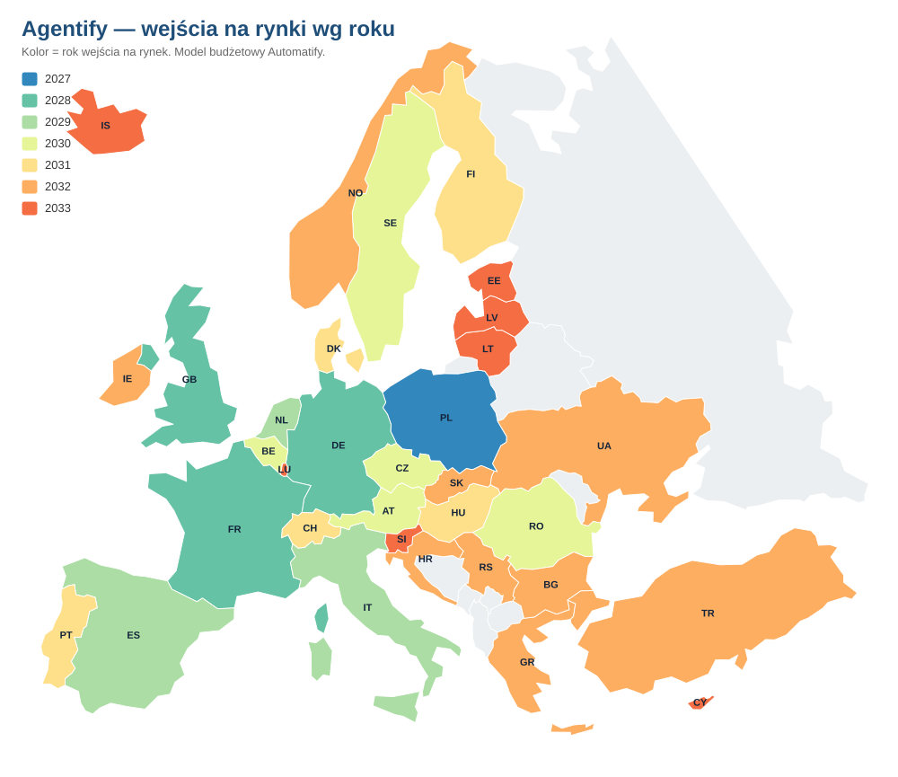
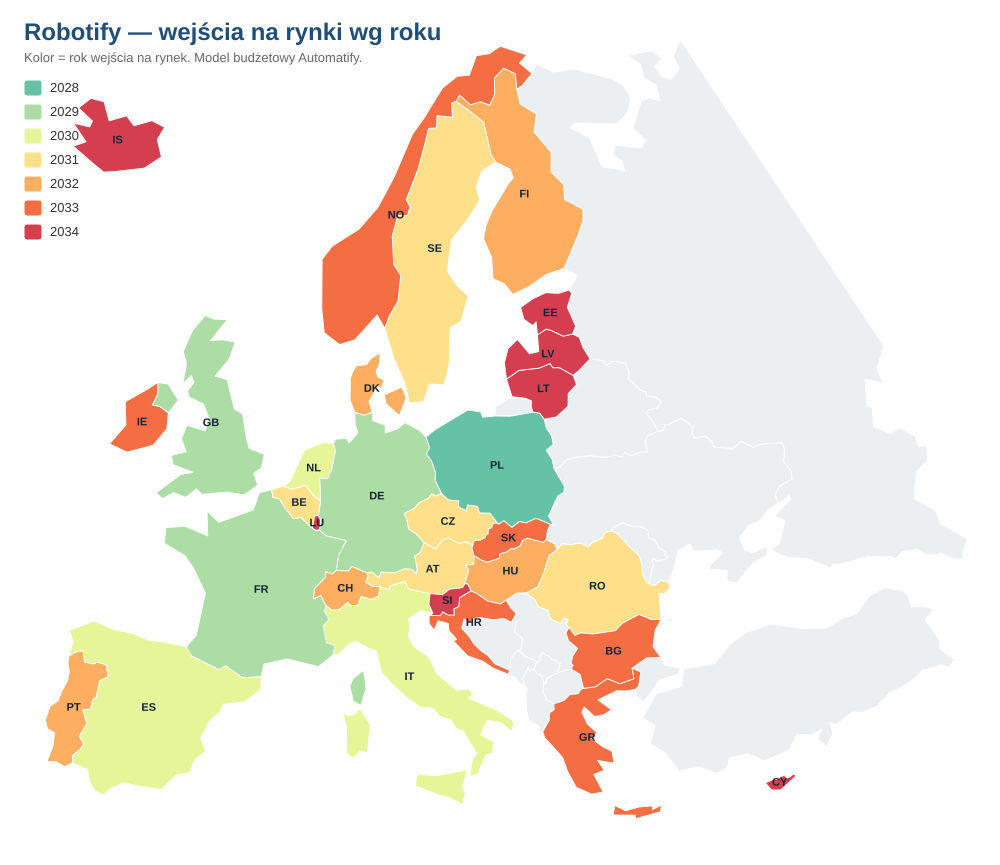

Skonsolidowany model finansowy Automatify (Agentify + Robotify): rachunek wyników rok po roku, rozbicie na obie linie biznesowe, struktura kosztów pierwszego roku działania każdego produktu, ekspansja geograficzna oraz założenia modelu. EBITDA-dodatnia od 2029, marża EBITDA 72,4% w 2035. Alokacja zysku Robotify od 2031: 40% R&D / 60% zysk zatrzymany.
Dwa filary jednego hubu automatyzacji, rentowność od trzeciego roku i skala ogólnoeuropejska.
Agentify + Robotify łącznie. Dwa lata inwestycji (2027–2028), przełom rentowności w 2029, skalowanie do 2035.
| Pozycja | 2027 | 2028 | 2029 | 2030 | 2031 | 2035 |
|---|---|---|---|---|---|---|
| Przychód | 0,7 | 18,9 | 234,4 | 1 672,4 | 5 813,7 | 39 644,0 |
| EBITDA | −4,9 | −16,7 | 104,4 | 1 052,2 | 4 070,8 | 28 693,1 |
| Marża EBITDA | −658,8% | −88,6% | 44,5% | 62,9% | 70,0% | 72,4% |
| Podatek CIT (19%) | 0,0 | 0,0 | 19,8 | 199,9 | 716,8 | 4 607,8 |
| Zysk netto | −4,9 | −16,7 | 84,6 | 852,3 | 3 055,9 | 19 643,8 |
| Marża netto | −658,8% | −88,6% | 36,1% | 51,0% | 52,6% | 49,6% |
Hub = Agentify + Robotify, bez wiersza korekty: koszty centrali wspólnej są dzielone po połowie po obu stronach, więc suma jest prosta. EBITDA-dodatnia od 2029; pierwszy podatek CIT również w 2029. 1 000 mln PLN = 1 mld PLN.
Cyfrowa linia biznesowa w modelu Pay-as-you-Save. Silnik kohortowy per kraj, 34 rynki, wariant bez ekspansji procesów u istniejących klientów.
| Pozycja (mln PLN) | 2027 | 2028 | 2029 | 2030 | 2031 | 2035 |
|---|---|---|---|---|---|---|
| Przychód | 0,7 | 18,3 | 213,5 | 1 509,1 | 4 818,6 | 25 229,4 |
| EBITDA | −4,8 | −12,9 | 102,0 | 949,7 | 3 325,6 | 17 589,3 |
| Marża EBITDA | −638,7% | −70,4% | 47,7% | 62,9% | 69,0% | 69,7% |
| Podatek CIT (19%) | 0,0 | 0,0 | 19,4 | 180,4 | 631,9 | 3 342,0 |
| Zysk netto | −4,8 | −12,9 | 82,6 | 769,3 | 2 693,8 | 14 247,3 |
| Klienci AKTYWNI Agentify (31.12) | 3 | 57 | 598 | 3 112 | 6 376 | 31 677 |
| Procesy AKTYWNE Agentify (31.12) | 17 | 299 | 3 109 | 16 183 | 33 154 | 164 721 |
Klient aktywny = klient po churnie, z uruchomionym przychodem (dwa miesiące zwłoki od podpisu do pierwszej faktury). To jedyna obowiązująca definicja klienta w całym materiale. Proces aktywny to jednostka wolumenu Agentify — nie wolno jej sumować z maszynami Robotify. Klient ważony miksu 2-6-2 ma 5,2 procesu.
Linia fizyczna: klient kupuje robota, my serwisujemy go za abonament rozliczany od roboto-godzin. Wejście rok po Agentify, 32 rynki do 2034.
| Pozycja (mln PLN) | 2027 | 2028 | 2029 | 2030 | 2031 | 2035 |
|---|---|---|---|---|---|---|
| Przychód | 0,0 | 0,5 | 20,9 | 163,2 | 995,1 | 14 414,6 |
| EBITDA | −0,15 | −3,8 | 2,5 | 102,4 | 745,2 | 11 103,9 |
| Marża EBITDA | — | −720,3% | 11,8% | 62,8% | 74,9% | 77,0% |
| R&D humanoid (40% EBITDA, od 2031) | 0,0 | 0,0 | 0,0 | 0,0 | 298,1 | 4 441,5 |
| Podatek CIT (19%) | 0,0 | 0,0 | 0,5 | 19,5 | 84,9 | 1 265,8 |
| Zysk netto | −0,15 | −3,8 | 2,0 | 83,0 | 362,1 | 5 396,5 |
| Klienci Robotify (31.12) | 5 | 50 | 500 | 2 500 | 8 000 | 51 035 |
| Roboty fizyczne Robotify — flota (31.12) | 13 | 197 | 2 625 | 16 408 | 58 775 | 535 919 |
Podstawa opodatkowania Robotify = EBITDA minus faktycznie wydane R&D, stawka 19%. CAPEX maszyny ponosi klient, nie my. Flota robotów fizycznych to inna wielkość niż procesy Agentify; obu nie wolno sumować.
Pierwszy rok działania Agentify to 2027, Robotify — 2028 (w 2027 Robotify nie ma jeszcze przychodu). Poniżej pełne rozbicie pozycja po pozycji, z podziałem na koszty zmienne i stałe oraz na koszty ludzi i pozostałe.
| Pozycja | Co napędza koszt | Ludzie | Pozostałe | Razem 2027 |
|---|---|---|---|---|
| Licencja producenta | konsumpcja licencji × procesy | — | 186 345,45 | 186 345,45 |
| Maintenance partnera | procesy aktywne | — | 68 163,33 | 68 163,33 |
| Koszt pozyskania klienta (CAC) | nowi klienci | — | 41 150 | 41 150 |
| Overhead od przychodu (2,05%) | przychód | — | 15 307,60 | 15 307,60 |
| KOSZTY ZMIENNE RAZEM | — | — | 310 966,38 | 310 966,38 |
| Role lokalne stałe — country manager, sprzedaż, marketing, operacje, administracja | liczba krajów (1) | 1 300 000 | — | 1 300 000 |
| Zespoły lokalne — delivery, customer success, ops | zespoły krajowe — pełna obsada od wejścia na rynek | 800 000 | — | 800 000 |
| Centrala — R&D | poziom planowany | 380 000 | — | 380 000 |
| Centrala — zarząd | poziom wpisany | 550 000 | — | 550 000 |
| Centrala — administracja (G&A) | poziom wpisany | 680 000 | — | 680 000 |
| Centrala — marketing i sprzedaż | poziom wpisany | 760 000 | — | 760 000 |
| Overhead stanowiska — etaty procesowe | etaty procesowe (3) | — | 117 000 | 117 000 |
| Overhead stanowiska — etaty krajowe i centrali | FTE stałe (12) | — | 468 000 | 468 000 |
| Overhead — baza usług profesjonalnych | stała | — | 150 000 | 150 000 |
| KOSZTY STAŁE RAZEM | — | 4 470 000 | 735 000 | 5 205 000 |
| KOSZTY AGENTIFY 2027 RAZEM | — | 4 470 000 | 1 045 966,38 | 5 515 966,38 |
Przychód Agentify 2027 = 746 712,36 zł, koszty 5 515 966,38 zł, EBITDA −4 769 254,02 zł. Suma „ludzie" (4 470 000 zł) to 81,0% kosztów roku i jest tożsama z podstawą, od której naliczany jest ESOP (10% płac = 447 000 zł). ESOP jest kosztem niegotówkowym poza EBITDA i nie wchodzi do sum powyżej. W pierwszym roku ponad dziewięć dziesiątych kosztów Agentify (94,4%) to koszty stałe — zespół i centrala są gotowe, zanim pojawi się sprzedaż, więc rok 2027 kupuje zdolność operacyjną, a nie obsługę wolumenu; dźwignia operacyjna zaczyna działać od 2029, gdy koszty zespołów zaczynają rosnąć wraz z liczbą procesów.
| Pozycja | Co napędza koszt | Ludzie | Pozostałe | Razem 2028 |
|---|---|---|---|---|
| Koszt serwisu — technicy, inżynierowie, logistyka | flota robotów | 69 496,82 | — | 69 496,82 |
| ESOP od płac serwisowych (niegotówkowy) | 10% płac serwisowych | 6 949,68 | — | 6 949,68 |
| Koszt pozyskania klienta (CAC) | nowi klienci | — | 18 750 | 18 750 |
| Connectivity (łączność maszyn) | flota robotów | — | 56 115,09 | 56 115,09 |
| Overhead od przychodu (2,05%) | przychód | — | 10 819,43 | 10 819,43 |
| KOSZTY ZMIENNE RAZEM | — | 76 446,50 | 85 684,52 | 162 131,02 |
| Role lokalne stałe — country manager, dyrektorzy, administracja | liczba krajów (1) | 60 000 | — | 60 000 |
| Centrala — R&D / platforma | poziom wpisany | 560 000 | — | 560 000 |
| Centrala — administracja (G&A) | poziom wpisany | 775 000 | — | 775 000 |
| Centrala — marketing i sprzedaż | poziom wpisany | 1 025 000 | — | 1 025 000 |
| Zarząd (CEO / CFO / COO / CTO) | poziom wpisany | 700 000 | — | 700 000 |
| Overhead stanowiska — etaty serwisowe | etaty serwisowe (4) | — | 156 000 | 156 000 |
| Overhead stanowiska — etaty krajowe i centrali | FTE stałe (11) | — | 429 000 | 429 000 |
| Overhead — baza usług profesjonalnych | stała | — | 150 000 | 150 000 |
| KOSZTY STAŁE RAZEM | — | 3 120 000 | 735 000 | 3 855 000 |
| KOSZTY ROBOTIFY 2028 RAZEM | — | 3 196 446,50 | 820 684,52 | 4 017 131,02 |
| ESOP od płac stałych (niegotówkowy, poza sumami wyżej) | 10% płac stałych | 312 000 | — | 312 000 |
Przychód Robotify 2028 = 527 777,25 zł (wyłącznie Polska), koszty w rachunku 4 329 131,02 zł łącznie z ESOP, EBITDA −3 801 353,77 zł. Suma „ludzie" bez ESOP od płac stałych to 3 196 446,50 zł, czyli 79,6% kosztów roku; z ESOP od płac stałych — 3 508 446,50 zł. Konwencja ESOP: po stronie Agentify ESOP stoi poza EBITDA, po stronie Robotify wchodzi do kosztów. Dlatego ESOP od płac stałych pokazujemy w osobnym wierszu pod sumami, a nie w nich.
| Pierwszy rok działania | Koszty zmienne | Koszty stałe | Udział kosztów stałych | Koszty ludzi | Udział kosztów ludzi |
|---|---|---|---|---|---|
| Agentify · 2027 | 310 966,38 | 5 205 000 | 94,4% | 4 470 000 | 81,0% |
| Robotify · 2028 | 162 131,02 | 3 855 000 | 96,0% | 3 196 446,50 | 79,6% |
| Hub · 2027 (Agentify + baza Robotify) | 310 966,38 | 5 355 000 | 94,5% | 4 470 000 | 78,9% |
W pierwszym roku każdego produktu cztery piąte kosztów to ludzie, a ponad dziewięć dziesiątych kosztów jest stałych — pierwszy rok kupuje zdolność operacyjną, nie obsługę wolumenu. Relacja odwraca się do 2029, gdy koszty stałe stanowią już tylko 27,8% kosztów hubu. Wiersz hubu 2027 zawiera 150 000 zł bazy usług profesjonalnych Robotify — jedyną pozycję tej spółki przed startem sprzedaży.
Rozpisanie stanowisko po stanowisku — nazwy stanowisk, etaty, stawki i koszty, kraj po kraju, dla obu produktów i dla centrali — niesie osobny dokument: Aneks kadrowy 2027–2028 (Automatify Aneks Kadrowy.html). Suplement zostaje na liczbach zbiorczych.
| Rok | Pozycja | Agentify | Robotify | Hub |
|---|---|---|---|---|
| 2027 | Etaty (FTE) | 15 | 0 | 15 |
| 2027 | Koszt ludzi (zł) | 4 470 000 | 0 | 4 470 000 |
| 2028 | Etaty (FTE) | 43 | 15 | 36 lokalnie + 21 centrali |
| 2028 | Koszt ludzi (zł) | 23 172 366,67 | 3 189 496,82 | 26 361 863,48 |
Konwencja przyjęta w tym wierszu: „koszt ludzi” to płace bez programu pracowniczego (ESOP) — po obu stronach jednakowo, żeby obie kolumny mierzyły to samo. Koszt ludzi osobno: Agentify 4 470 000 zł (2027) i 23 172 366,67 zł (2028); Robotify 0 zł (2027) i 3 189 496,82 zł (2028) — dokładnie te same wartości, które rozpisuje stanowisko po stanowisku aneks kadrowy. Wiersz hubu 2028 jest ich sumą: 26 361 863,48 zł. Program pracowniczy stoi poza tą sumą po obu stronach: Agentify 2 317 236,67 zł, Robotify 6 949,68 zł od płac serwisowych i 312 000 zł od płac stałych (razem 318 949,68 zł). Etaty hubu 2028. Admin w Polsce pracuje po połowie etatu dla każdego filaru i jest wykazany po obu stronach, dlatego obsada lokalna hubu w 2028 liczy 36 osób — 32 Agentify plus 5 Robotify, przy jednej osobie wspólnej. Koszt tego stanowiska dzieli się po połowie i sumuje do jednej pełnej pensji, 120 000 zł.
Start w Polsce. Agentify wchodzi na 34 rynki do 2033, Robotify na 32 rynki do 2034 — na każdy z nich rok po Agentify.


Agentify wchodzi do 34 krajów, Robotify do 32. Robotify nie wchodzi do Turcji i Serbii, obecnych po stronie Agentify.
Kluczowe parametry stojące za projekcją. Wszystkie są parametrami sterującymi projekcji, nie opisem — zmiana parametru przelicza cały wynik.
Automatify to spółka-matka z dwoma filarami. Poziom grupy = prosta suma obu, bez wiersza korekty: koszt osoby pracującej dla obu produktów jest z góry dzielony po połowie.
Od przychodu do zysku netto, wartości RAZEM (Agentify + Robotify), mln PLN. Podział kosztów na zmienne i stałe według tego samego kryterium, co w sekcji 5.
| Pozycja (mln PLN) — RAZEM | 2027 | 2029 | 2031 | 2035 |
|---|---|---|---|---|
| Przychód | 0,7 | 234,4 | 5 813,7 | 39 644,0 |
| − Koszty zmienne | 0,3 | 93,0 | 1 655,5 | 10 726,8 |
| = Marża po kosztach zmiennych | 0,4 | 141,4 | 4 158,2 | 28 917,2 |
| − Koszty stałe | 5,4 | 35,8 | 84,5 | 215,0 |
| − ESOP Robotify (niegotówkowy) | 0,0 | 1,2 | 2,9 | 9,0 |
| = EBITDA | −4,9 | 104,4 | 4 070,8 | 28 693,1 |
| − R&D humanoid Robotify (40% jego EBITDA, od 2031) | 0,0 | 0,0 | −298,1 | −4 441,5 |
| = Zysk przed podatkiem | −4,9 | 104,4 | 3 772,7 | 24 251,6 |
| − CIT 19% | 0,0 | −19,8 | −716,8 | −4 607,8 |
| = Zysk netto | −4,9 | 84,6 | 3 055,9 | 19 643,8 |
Wiersz ESOP stoi osobno, bo oba filary traktują go inaczej: po stronie Agentify ESOP jest poza EBITDA (2029: 3,7 mln zł; 2035: 28,8 mln zł i nie ma go w żadnym wierszu wyżej), po stronie Robotify wchodzi do kosztów. Ujednolicenie tej konwencji planujemy przy zamknięciu konsolidacji grupy.
| mln PLN | AGF 2029 | RBF 2029 | RAZEM 2029 | AGF 2035 | RBF 2035 | RAZEM 2035 |
|---|---|---|---|---|---|---|
| Przychód | 213,5 | 20,9 | 234,4 | 25 229,4 | 14 414,6 | 39 644,0 |
| EBITDA | 102,0 | 2,5 | 104,4 | 17 589,3 | 11 103,9 | 28 693,1 |
| Zysk netto | 82,6 | 2,0 | 84,6 | 14 247,3 | 5 396,5 | 19 643,8 |
Agentify jest motorem skali i marży w całym oknie; Robotify dokłada się realnie od 2030 i przyspiesza po 2031, gdy flota przekracza 58 tys. maszyn. Wkład Robotify w EBITDA hubu 2029 (2,5 mln zł) wynika z zasady cenowej opisanej w sekcji 4. AGF = Agentify, RBF = Robotify.
Koszty, które nie zależą od wolumenu sprzedaży — role lokalne stałe, centrala, overhead stanowiskowy. To kwota, którą grupa finansuje nawet przy zerowym przychodzie.
| mln PLN | 2027 | 2028 | 2029 | 2030 | 2031 |
|---|---|---|---|---|---|
| Koszty stałe hubu (próg przetrwania) | 5,4 | 28,7 | 35,8 | 58,4 | 84,5 |
| Koszty zmienne hubu (dla porównania) | 0,3 | 6,6 | 93,0 | 559,9 | 1 655,5 |
| Udział kosztów stałych | 94,5% | 81,3% | 27,8% | 9,4% | 4,9% |
Sprawdziliśmy tę klasyfikację, przeskalowując plan sprzedaży o ±50%: żadna z pozycji zaliczonych do stałych w latach 2027–2029 się nie poruszyła; od 2030 jedynym wyjątkiem są etaty kierownicze zespołów operacyjnych (Team Lead Agentify, Service Lead Robotify), liczone od wielkości zespołu — 1,9% bloku stałego w 2030 i w 2031. Kwoty nie zawierają ESOP (niegotówkowy). Wzrost progu 2027 → 2031 wynika z rolloutu — każdy nowy kraj dokłada stały zespół zarządczy, niezależnie od sprzedaży w tym kraju.
Silnik kohortowy per kraj (34 rynki), liczony na siatce miesięcznej 2026-01…2045-12. Model buduje przychód z podpisów, procesów, cen i churnu — nie z ekstrapolacji.
| Etap | Wartość | Opis |
|---|---|---|
| Podpisy 2027–2035 | 38 726 | umowy zawarte łącznie, przed churnem (plan wolumenowy per kraj) |
| Klienci AKTYWNI 31.12.2035 | 31 677 | po churnie 5%/rok i po dwumiesięcznej zwłoce do pierwszej faktury |
| Procesy AKTYWNE 31.12.2035 | 164 721 | klient ważony = 5,2 procesu; jednostka wolumenu Agentify |
| Zautomatyzowane etaty 31.12.2035 | ~773 tys. | 4,69 etatu na proces — to skala oszczędności po stronie klientów |
Model Agentify nie zawiera warstwy TAM/SAM — startuje od planu podpisów per kraj, a nie od udziału w rynku. Lejek rynkowy jest policzony po stronie Robotify (sekcja 12).
| Kraj | Rok wejścia | Mnożnik płac vs PL | Podpisy 2027–2035 |
|---|---|---|---|
| Niemcy | 2028 | 3,03 | 9 385 |
| Wlk. Brytania | 2028 | 2,60 | 5 757 |
| Francja | 2028 | 3,00 | 4 710 |
| Polska | 2027 | 1,00 | 3 811 |
| Włochy | 2029 | 2,17 | 3 090 |
| Hiszpania | 2029 | 1,78 | 2 596 |
Podpisy to umowy zawarte, przed churnem — nie liczba klientów aktywnych. Mnożnik płac kraju napędza jednocześnie koszty lokalne i wartość oszczędności klienta, więc rynki drogie są jednocześnie droższe w obsłudze i bardziej dochodowe.
Roboty fizyczne jako usługa. Klient płaci CAPEX maszyny, my serwisujemy ją za abonament rozliczany od roboto-godzin. Silnik liczy 32 kraje osobno.
| Etap | Wartość | Opis |
|---|---|---|
| TAM | 104,0 mln | pracowników fizycznych w całej gospodarce Europy (154,1 mln zatrudnionych × intensywność pracy fizycznej) |
| SAM | 282 530 | firm MŚP 50–249 osób; 19,4 mln pracowników fizycznych |
| SOM 2035 | 51 035 | klientów Robotify = 18,1% firm MŚP (sufit 20%, osiągany w 2037) |
Test 1 000 robotów liczy się na stawce 5 zł/robot-h dla Europy Środkowej. W pełnym modelu stawka jest ustawiana per kraj (Polska 4,07 zł, Niemcy 12,36 zł, Szwajcaria — najwyżej) i spada o 5% rocznie. Marża w teście to marża przed connectivity, platformą, G&A, marketingiem i CAC.
| Kraj | Przychód 2035 | Kontrybucja 2035 |
|---|---|---|
| Niemcy | 3 537,7 | 2 892,9 |
| Francja | 1 832,7 | 1 497,8 |
| Włochy | 1 150,4 | 949,3 |
| Holandia | 952,2 | 785,6 |
| Hiszpania | 807,1 | 665,5 |
| Polska | 415,0 | 334,4 |
| Pozycja | 2031 | 2035 | Skumul. 2031–2035 |
|---|---|---|---|
| EBITDA | 745,2 | 11 103,9 | 26 519,8 |
| R&D humanoid (40%) | 298,1 | 4 441,5 | 10 607,9 |
| Zysk zatrzymany (60%) = podstawa opodatkowania | 447,1 | 6 662,3 | 15 911,9 |
| Podatek CIT (19%) | 84,9 | 1 265,8 | 3 023,3 |
| Zysk netto | 362,1 | 5 396,5 | 12 888,6 |
Rezerwa CAPEX robotów została wycofana z modelu w całości: CAPEX maszyny ponosi klient, więc nie było zakupu, który rezerwa miałaby finansować. Odłożenie gotówki nie jest kosztem uzyskania przychodu — nakład na badania i rozwój jest. Koszt pracy (PLN/h) w modelu: Polska 58 (referencja), Niemcy 176, Francja 174, Szwajcaria 224; najniżej Bułgaria 40 i Rumunia 47.
Kluczowe pojęcia używane w modelu budżetowym. Każda liczba jednostkowa w materiale ma dwie etykiety: czego dotyczy i czyja jest.